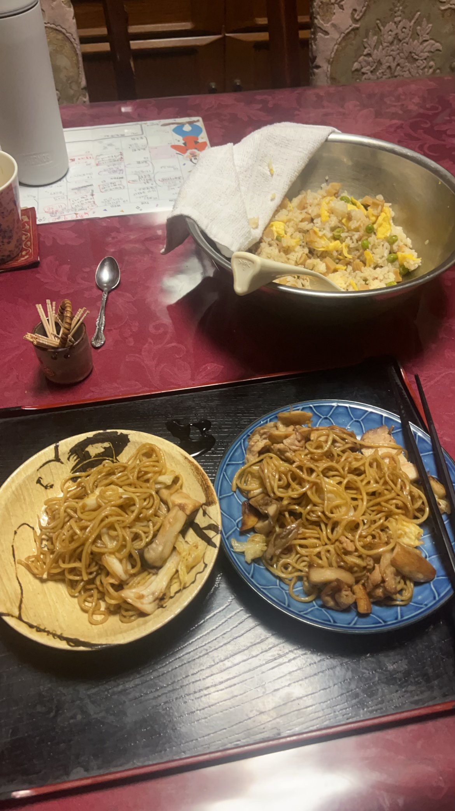
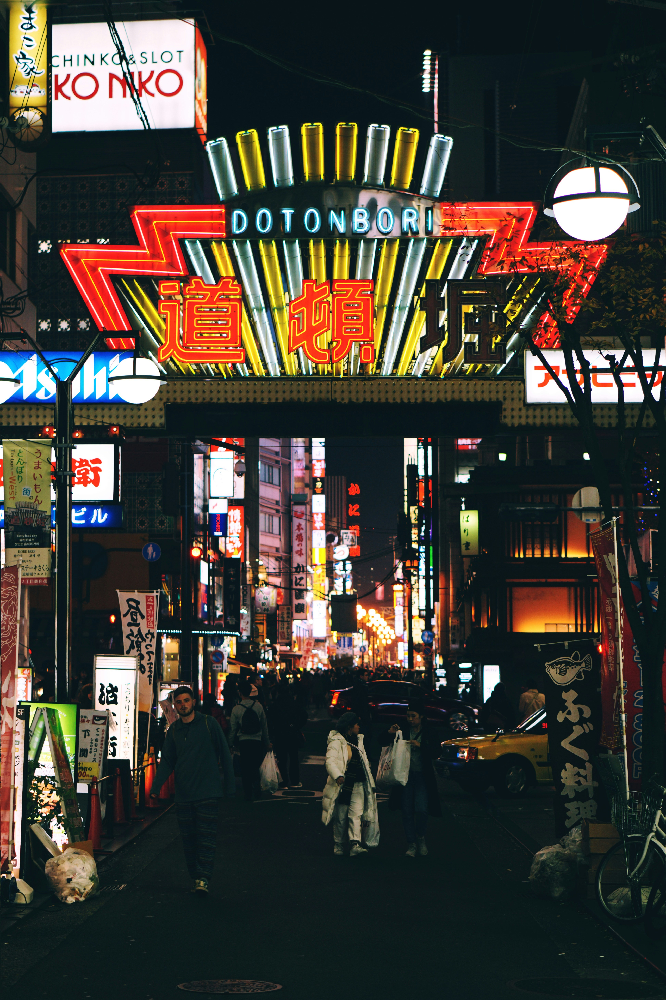
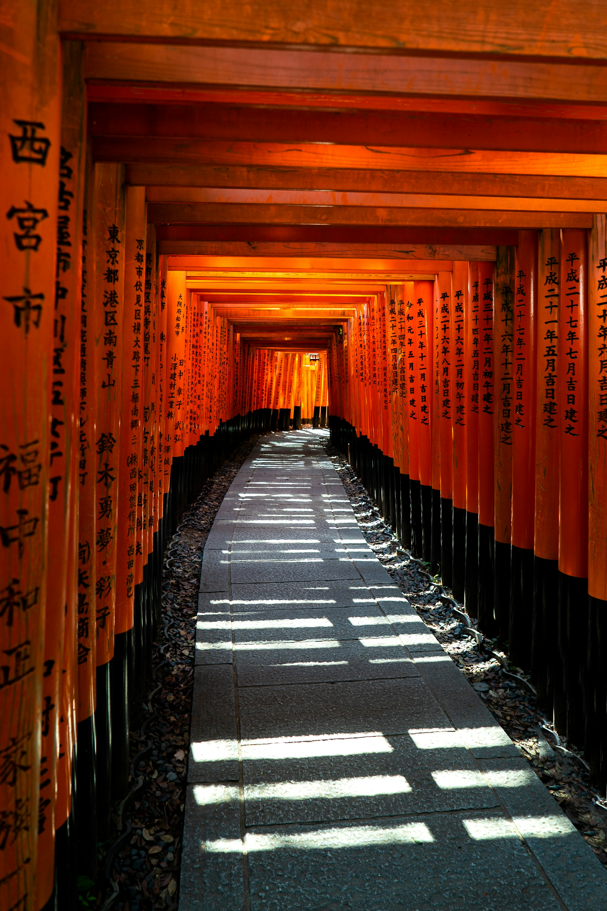

Osaka feels like a second home to me. I spent part of my childhood there, going to elementary school and enjoying long recesses. We kids would help out by cleaning and serving lunch, which was fun and made us feel responsible.
Osaka is famous for its amazing food, earning the nickname 'Kitchen of Japan.' My favorite dishes are Takoyaki and Kushikatsu. Takoyaki are delicious balls filled with octopus and topped with a tasty sauce. Kushikatsu is even better - it's meat, seafood, and vegetables on skewers, all deep-fried and served with a special sauce. Yum!
While lots of people visit Osaka for Dotonbori, a lively area known for its street food and the big Glico Running Man sign, my favorite place is Shinsekai. It's a bit old-school, with fun arcades where you can play games like Smartball, similar to Pachinko, and win prizes. Shinsekai also has lots of Kushikatsu restaurants and the famous Tsutenkaku Tower. I spent a lot of time there last summer, and I think the arcades in Japan have a special vibe that you can't find in the US.

This is Kare japanese curry. This food was ranked number 1 food in the world by a famous site. It's thicker and sweeter compared to its Indian counterpart, typically made with a blend of spices, vegetables like onions, carrots, and potatoes, and meat such as beef, pork, or chicken. It's often served over rice or with breaded and fried pork cutlets (katsu curry).

Okonomiyaki is a savory Japanese pancake that contains a variety of ingredients. The name literally means "grilled as you like it," reflecting the customizable nature of the dish. Common ingredients include cabbage, green onion, meat (often pork belly), and seafood, mixed into a batter and cooked on a griddle. It's usually topped with okonomiyaki sauce, mayonnaise, dried seaweed, and bonito flakes. This specific one in the picture is hiroshima style with noodles as its base instead.

Yakisoba is a popular Japanese stir-fried noodle dish made with bite-sized pieces of pork, vegetables (such as cabbage, onions, and carrots), and wheat noodles. It's seasoned with a sweet and savory sauce similar to Worcestershire sauce. Often garnished with beni shoga (pickled ginger), katsuobushi (bonito flakes), and mayonnaise, yakisoba is a common feature at festivals and street food stalls. This in the picture is from my obachans cooking
Vist Shinsekai
Shinsekai is one of my favorate places in japan it is like a imaged future of the past. Everything here looks very old but yet modern. Aracdes are everywhere especially retro arcades you wont find anywhere else. This is a very Unique town.
Doutonburi

Dotonburi is the heart of Osaka's entertainment district, famous for its dazzling neon lights and the iconic Glico Man sign. This bustling area is a paradise for food lovers, offering endless options from street food to gourmet dining.
Osaka Castle

Osaka Castle is a symbol of Japans rich History.Surrounded by moats and parkland, this iconic landmark offers stunning views of the city and a deep dive into the samurai era through its museum housed within.
Kinkaku-ji

Kinkaku-ji, or the Golden Pavilion, is a Zen Buddhist temple in Kyoto that is renowned for its stunning gold-leaf-coated exterior. Set against a picturesque pond and surrounded by lush gardens, it provides a serene and breathtakingly beautiful experience.
Fushimi Inari Shrine

Fushimi Inari Taisha is famous for its thousands of vermilion torii gates, which create an enchanting path up the sacred Mount Inari. It's a place of spiritual significance and a must-visit for those looking to explore Shinto culture and enjoy scenic hikes. Me and my brother did this hike last summer and it was a great expericance
Gion

Gion is Kyoto's most famous geisha district, where visitors can immerse themselves in the traditional and elegant atmosphere of old Kyoto. Stroll through its historic streets for a chance to see geiko (Kyoto dialect for geisha) and maiko (apprentice geisha) or enjoy a tea ceremony in one of its teahouses.